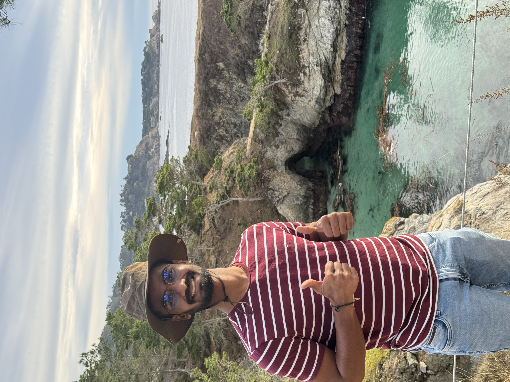

Decision-sufficient world states
Learn compact representations of geometry, moving actors, goals, and uncertainty. Preserve what matters for action while distinguishing supported inference from extrapolation.

I am a Staff Researcher at Qualcomm AI Research, with a Ph.D. in Electrical Engineering from Johns Hopkins University (advised by Dr. Vishal M. Patel) and B.Tech. and M.Tech. degrees in Electrical Engineering from IIT Madras. I develop predictive visual intelligence for robust embodied agents: models that understand dynamic 3D/4D scenes, anticipate the consequences of actions, and act reliably when environments change.
My research connects uncertainty-aware and data-efficient learning, temporal perception, vision-language-action (VLA) models, and latent world models to robotics and autonomous driving. Earlier work spans image restoration, segmentation, and domain adaptation. I received the Best Paper Award — IEEE ICIP 2021.
I had the opportunity to intern at:
My research has progressed from reliable perception to predictive action. The central question is: how can an embodied agent learn a world model that helps it choose reliable actions, not merely generate plausible predictions? My agenda connects three directions.
Learn compact representations of geometry, moving actors, goals, and uncertainty. Preserve what matters for action while distinguishing supported inference from extrapolation.
Generate action-conditioned futures and reactive multi-agent interactions missing from logged data, and use them to train and evaluate policies in challenging situations.
Acquire additional evidence and spend computation when uncertainty or consequence warrants it. Evaluate whether confidence matches accuracy, models generalize, and agents act reliably in closed-loop tests.
At Qualcomm, I led MAMo (ICCV 2023), FutureDepth (ECCV 2024), multimodal-LLM distillation (DiMA, CVPR 2025), RoCA (ICML 2026), GeRo (NeurIPS 2026), and MAPLE (NeurIPS 2026). I also led live VLA driving demonstrations on the Snapdragon Ride platform at NeurIPS 2025, CES 2026, and CVPR 2026.
My goal as an educator is to help students become independent technical thinkers: able to derive an idea, test it in a real system, explain why it succeeds or fails, and judge its consequences. I link abstractions to systems students can manipulate, make reasoning visible through active and staged assessment, and gradually transfer ownership to the student.
My mentoring model centers on clarity, evidence, and independence. I mentor graduate collaborators, research interns, junior researchers, and external Ph.D. students through the Qualcomm Innovation Fellowship, from precise research questions and reproducible baselines to writing, presentation, and intellectual ownership. Clear expectations, individualized support, and a classroom where questions and productive failure are normal help students find confidence in their own scientific voice.
Publication-status badges highlight accepted and published papers; * indicates equal contribution.
A research comparison of RoCA and ORION across driving scenarios.